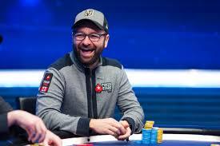

Dan Bilzerian
O sesiune recenta de poker online transmisa pe Twitter a revelat un adevar pe care multi il banuiau: Dan Bilzerian nu stie poker pe cat pretinde. Cel putin asa sustine cel care a analizat partida, profesionistul Doug Polk.
Misterioasa avere a playboy-ului american de 36 de ani din Tampa - Florida, Dan Bilzerian, a fost pusa multa vreme pe seama pokerului. Cel putin dupa declaratiile excentricului posesor al unui cont de Instagram cu 20 de milioane de followeri, milionarul Bilzerian. El spunea in 2013 intr-un interviu in Daily Dot: "Am ramas fara bani in anul 2, mi-am vandut cateva arme, am transformat 750$ in 10.000$, am zburat la Vegas si am facut din ei 187.000$". In Acelasi an, Daily Mail l-a descris drept "un campion de poker in valoare de 100 milioane $".
.jpg)
Phil Ivey
Phillip Dennis Ivey Jr. (born February 1, 1977)[2] is an American professional poker player who has won ten World Series of Poker bracelets, one World Poker Tour title, and appeared at nine World Poker Tour final tables. Ivey was at one time regarded by numerous poker observers and contemporaries as the best all-around player in the world.[3][4][5] In 2017, he was elected to the Poker Hall of Fame.[6]
Ivey's tournament accomplishments include winning three bracelets at the 2002 World Series of Poker, tying Phil Hellmuth Jr, Ted Forrest, and Puggy Pearson for most World Series tournament wins in a single year (Jeff Lisandro and George Danzer have since tied the record).

Daniel Negreanu
În anul 1997, norocul lui Negreanu pare să se schimbe la revenirea sa și obține două titluri de campion la Campionatul Mondial de Poker desfășurat la Foxwoods, câștigând astfel 133.600 $ și fiind ales cel mai bun jucător al turneului. Negreanu triumfă din nou în anul 1998, la World Series Of Poker (WSOP), câștigând 169.460 $ și brățara de 2.000 $ Pot Limit Hold'em, devenind astfel cel mai tânăr jucător de poker care obține un titlu la WSOP – record pe care îl deține până în anul 2004.
În anul următor, devine unul dintre cei mai străluciți jucători ai turneului, obținând două titluri la World Poker Tour (WPT) și alte două brățări la WSOP și ajungând să joace la 11 finale.
În anul 2004, Daniel Negreanu a fost declarat "jucătorul anului" după ce a câștigat World Poker Tour (turneul mondial de poker). Seria de victorii a început în septembrie 2004, câștigând în Atlantic City marele premiu în valoare de 1.117.000 de dolari. Dar marea lovitură a dat-o în decembrie 2004, în Las Vegas, unde a câștigat premiul cel mare în valoare de 1.770.000 de dolari.
Joc de noroc sau Joc de hazard (arabă hazard - joc cu zaruri) sunt denumite categoria de jocuri unde pierderea sau câștigul depind în mare parte de întâmplare (noroc). Aceste tipuri de jocuri depind într-un grad diferit de noroc sau de iscusința jucătorului. Astfel jocul de ruletă practicat în cazinouri nu poate fi influențat deloc de inteligența jucătorului ci numai de întâmplare. Pe când „ Black Jack” (jocul de cărți 21) depinde într-o măsură mai mare de iscusința jucătorului.
Jocuri slot, aceste jocuri au în general 3, 5 ... tamburi rotativi, iar câștigul se obține atunci când se realizează alinierea a minim doua simboluri identice pe linia orizontala sau cea diagonala în cazul în care premierile sa fac pe mai multe linii.
Originea exactă a jocurilor de noroc nu este cunoscută. Chinezii au înregistrat oficial primele jocuri de noroc în anul 2300 î.e.n., dar se crede că această activitate a fost practicată în toate societățile umane încă de la începuturi. De la grecii antici și romani la Franța lui Napoleon și Anglia elizabetană, istoria este plină de povești depre divertisment cu jocuri de noroc.
Termenul de joc de noroc nu este disjunct de cel de legalitate, existând companii care oferă (legal) jocuri de noroc ca activități publice care pot fi reglementate de una sau mai multe organisme de control. În România, reglementatorul pentru jocurile de noroc este Oficiul Național pentru Jocuri de Noroc.
Jocurile de noroc sunt o activitate comercială internațională majoră, piața legală a jocurilor de noroc fiind estimată la 335 miliarde USD în 2009